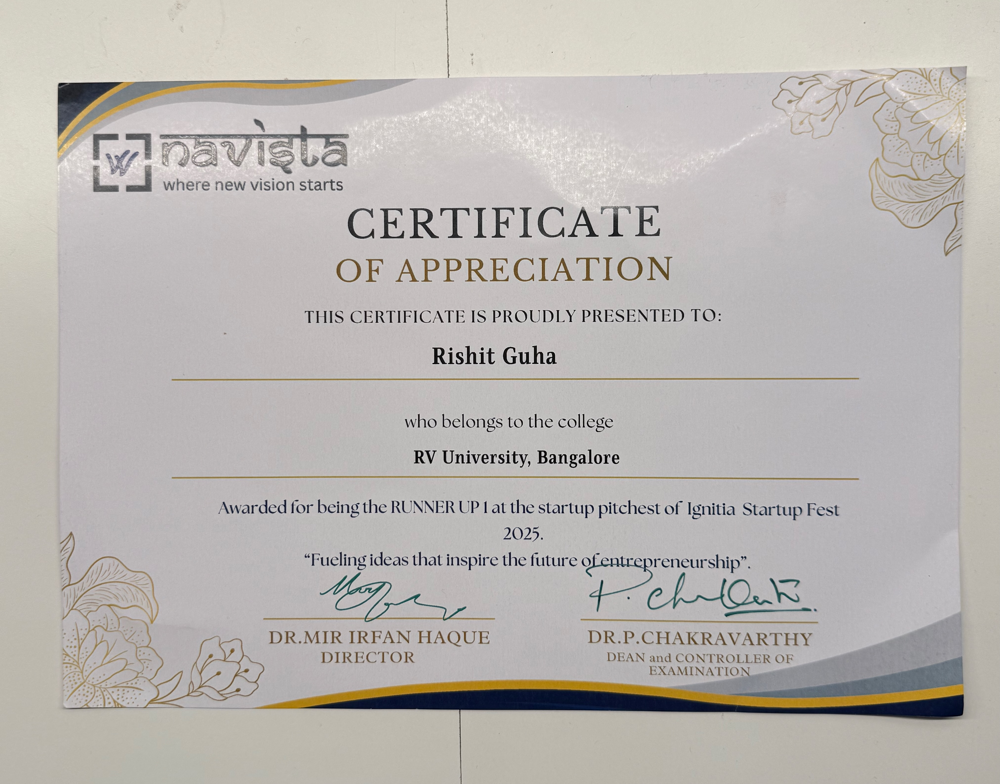
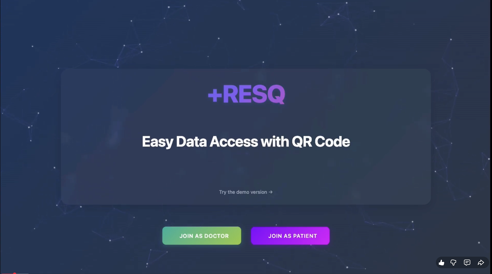
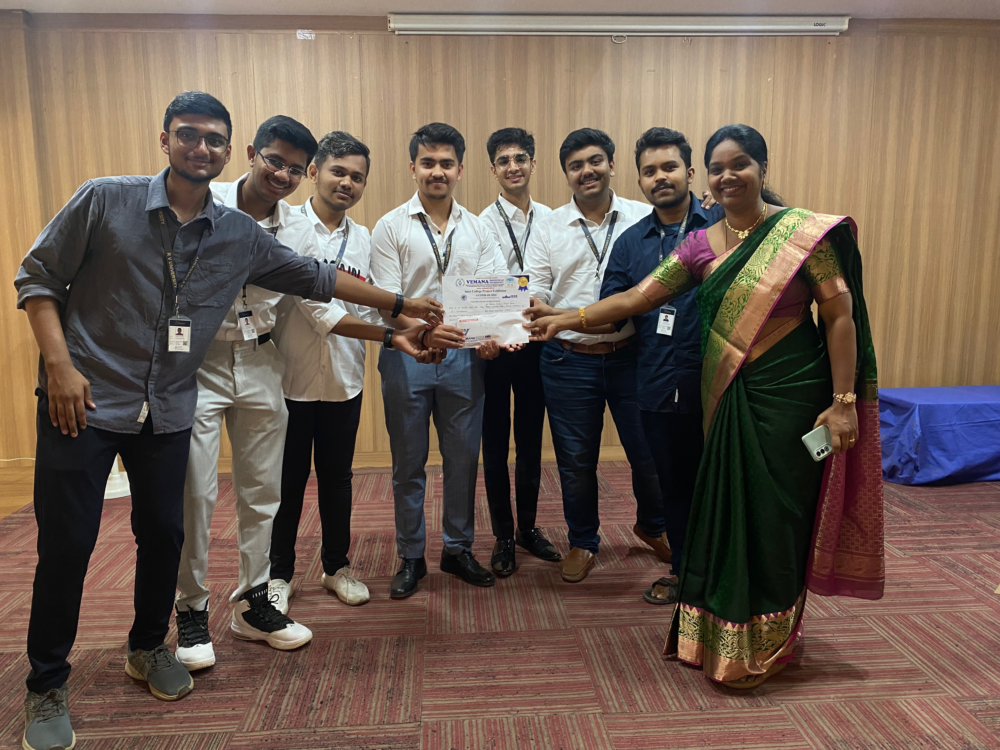

VaaniRekha

A FastAPI microservice designed to detect deepfake voices and fraud keywords (such as OTP, Aadhaar, PAN, and CVV) across 9+ Indian languages.
- Utilizes Sarvam AI and wav2vec2 for multilingual detection
- Achieves <6s latency with tiered risk scoring (HIGH/MEDIUM/LOW)
- Dockerized on Railway with API authentication and health checks
- Validated using Postman for API reliability and fraud-detection accuracy
Phishing Detector

A full-stack machine learning security platform engineered to detect phishing URLs and malicious emails with high precision.
- Trained on 400,000+ URLs and emails achieving 98% detection accuracy
- Chrome extension with real-time scanning — flags sites before page loads
- Flask-based backend APIs for ML inference, logging, and analytics dashboards
- OWASP-aligned input validation and security hardening throughout
- Awarded 2nd Prize at RV University's internal Hack the Future hackathon
Ignitia 2k25 Startup Pitch

Successfully pitched an innovative tech startup concept at IGNITIA 2K25, securing the Runner-up position and an initial seed funding of ₹25,000 to jumpstart development and scaling.
- Awarded Runner-up at IGNITIA 2K25 among numerous competing teams
- Secured ₹25,000 seed funding for project development
- Demonstrated strong product-market fit and technical feasibility during the pitch
ResQ Healthcare

A QR-code-driven smart healthcare platform built for EY Techathon 2025. Designed to solve the critical problem of inaccessible medical records in emergencies — the system enables first responders to instantly retrieve a patient's full history via QR, even without internet, and uses AI to summarize medical data for rapid triage decisions.
- QR-based patient record retrieval — offline-first architecture for emergency use
- AI-powered medical record summarization for rapid emergency triage
- MySQL relational backend for structured, HIPAA-aware health data storage
- FastAPI REST layer with authentication and role-based access control
Vimana ResQ

An award-winning hardware-software system that intelligently clears traffic signals for emergency vehicles in real-time. Using GPS tracking and a Raspberry Pi controller, the system detects approaching ambulances or fire trucks and commands signals to green — dramatically reducing response times in smart city environments. Awarded 1st Prize at IEEE's Smart City Infrastructure Exhibition.
- 1st Prize at IEEE Smart City Infrastructure Project Exhibition
- GPS-based real-time vehicle tracking with sub-second signal preemption trigger
- Raspberry Pi hardware stack with Python-based signal control logic
- Designed for integration with smart city traffic management infrastructure
- Reduces emergency vehicle response time by clearing intersections proactively
Structured Innovation Board Game

Conceptualized, designed, and constructed a completely new and highly original board game from scratch. We mapped out entirely novel core mechanics, meticulously balanced gameplay systems, and engineered beautiful, tactile physical components. Because of its originality and design robustness, we were awarded the Best Project by our faculty and the board game has been sent to be filed for patent protection.
- Designed entirely new gameplay mechanics avoiding conventional board game tropes
- Built and designed the physical components necessary for gameplay prototyping
- Awarded Best Project by reviewers
- Sent to the IP administration for filing an official patent
Work in progress...
more trophies incoming 🏆